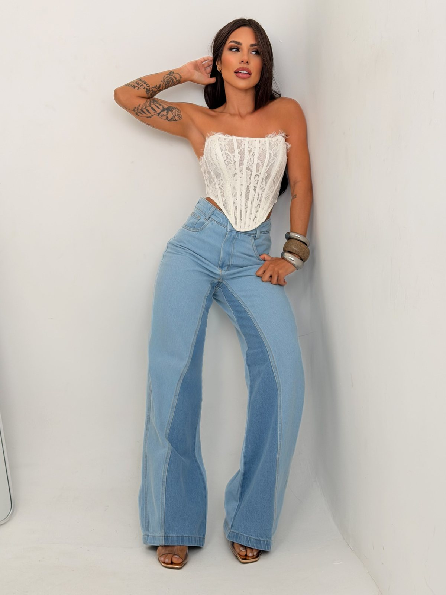
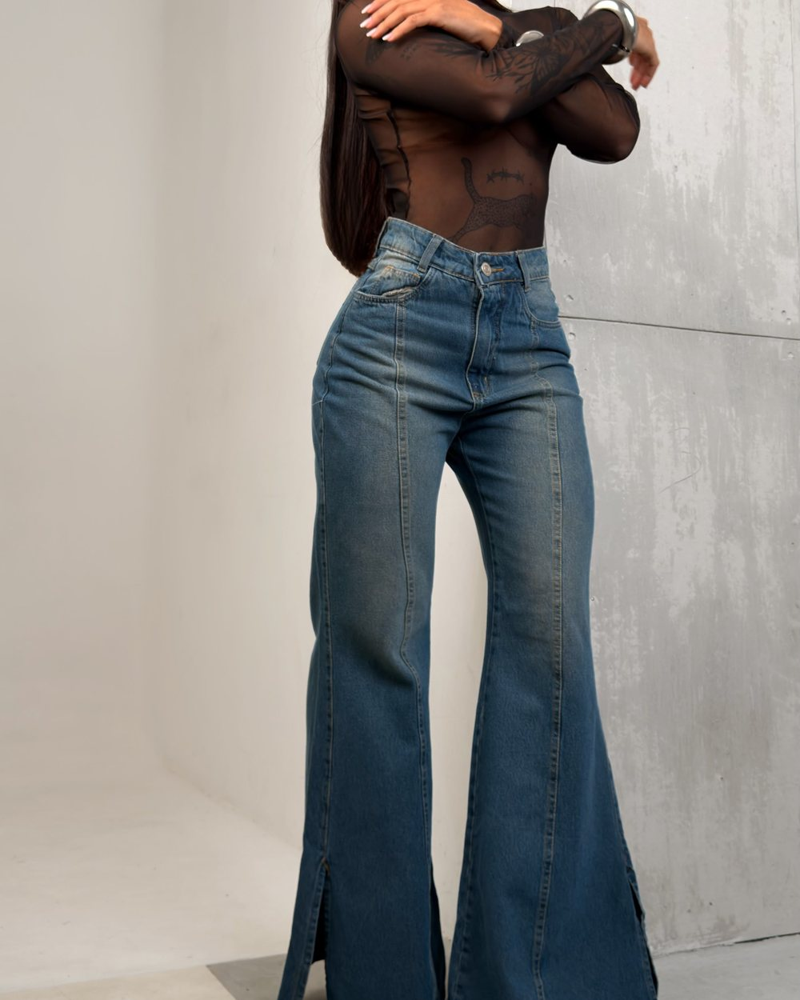

Bem-vindos à
DUOJEANSSeu jeans. Seu jeito.

Nossa história
Mais que uma loja,
um propósito
A Duo nasce com um propósito claro: vestir mulheres reais com jeans que unem conforto, qualidade e estilo. Não acreditamos em peça que só funciona na foto — acreditamos naquela que você veste na segunda de manhã e continua vestindo no fim de semana.
Aqui, cada detalhe importa. Cada escolha é feita para valorizar o que te torna única.

Denim feminino,
essência atemporal
Acreditamos que o jeans vai muito além das tendências. Ele acompanha histórias, momentos e versões de você. Nossa curadoria é feita para entregar peças com caimento impecável, tecidos de qualidade e designs que atravessam o tempo.
O que guia a curadoria
Nossos compromissos
Modelagens que valorizam
Testamos o caimento em corpos reais antes de qualquer peça entrar na coleção.
Conforto que você sente
Tecido, elastano e acabamento escolhidos para durar o dia inteiro sem incomodar.
Versatilidade real
Peças que combinam entre si e com o que você já tem no armário.
Qualidade que fica
Costura reforçada e lavagens que não desbotam na primeira semana.